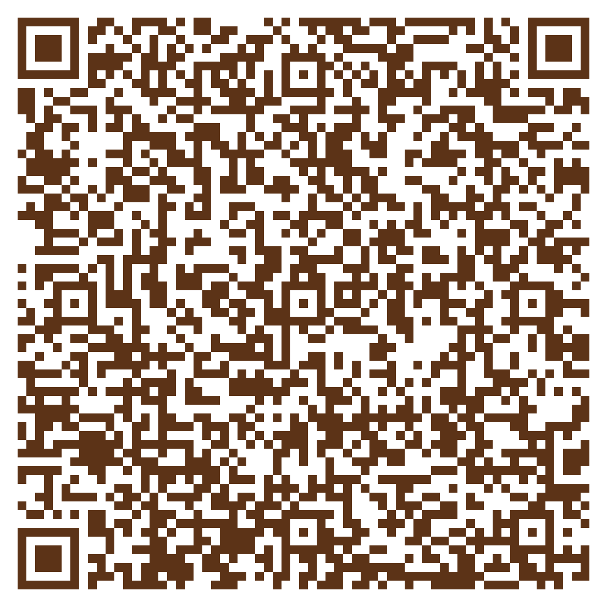

{kind=link}
Wir sind zurück aus der Baby-Pause. Neue Termine ab Mai 2017 möglich.
Peter Hess - Klangmassagepraktikerin
und
Musiktherapeutin der DMVS e.V.
Tel.: +49 (0) 163 777 44 37
Mail: santina_koj@gmx.de
Peter Hess - Klangmassage
„Der Ton der Klangschale berührt unser Innerstes,
er bringt die Seele zum Schwingen.
Der Klang löst Spannungen,
mobilisiert die Selbstheilungskräfte
und setzt schöpferische Energien frei.“
Peter Hess
**************************************************************
Die Peter Hess - Klangmassage
- ist eine ganzheitliche Methode, die Körper, Seele und Geist anspricht
- bewirkt eine tiefe Entspannung
- stärkt das ursprüngliche Vertrauen des Menschen
- erleichtert das „Loslassen“ – körperlich wie mental
- trägt zur Gesundheitsförderung bei: Harmonisierung, Regeneration und Vitalisierung
- verbessert die Körperwahrnehmung
- ermöglicht Zugang zu ungenutzten Ressourcen
- stärkt Selbstbewusstsein, Kreativität, Schaffenskraft und Motivation
**************************************************************
Ablauf der Peter Hess - Klangmassage
Nach einem Informationsgespräch werden obertonreiche Klangschalen auf
den bekleideten Körper der Klienten aufgesetzt und behutsam angeschlagen.
Die harmonischen Klänge beruhigen Körper und Geist. Die feinen Vibrationen,
die von der Klangschale ausgehen, breiten sich nach und nach im Körper aus.
Schnell setzt eine wohltuende Entspannung ein.
Ein abschließendes Gespräch gibt den Klienten die Möglichkeit,
ihre Erfahrungen mitzuteilen und bewusst werden zu lassen.
Für die Klangmassage werden qualitativ hochwertige Therapie-Klangschalen von
Peter Hess verwendet.
**************************************************************
Entstehungshintergrund der Peter Hess – Klangmassage
Der Klangmassage liegen uralte Kenntnisse über die Wirkung von Klängen zugrunde,
die schon vor über 5000 Jahren in der indischen Heilkunst Anwendung fanden.
Peter Hess entwickelte die Klangmassage in den 80er Jahren. Auf der
Suche nach alternativen Heilmethoden unternahm er viele Reisen nach
Nepal, Indien und Tibet. In jahrelanger Forschung und Praxis passte er die
Klangmassage an die Bedürfnisse der Menschen im Westen an.
Die Anwendungsmöglichkeiten reichen von sanfter, aber hochwirksamer Entspannung
bis zum zielgerichteten Einsatz in Pädagogik, Therapie, Wellness sowie in Heil- und Heilfachberufen.
Weitere Informationen:
Kommentare zu Klangmassagen mit Santina
www.peter-hess-institut.de
www.fachverband-klang.de
Links Musiktherapie
Musik und Begegnung
Klanggewächshaus
Musiktherapie nach Christoph Schwabe
„Musik berührt uns und kann das ausdrücken,
was wir nicht vermögen in Worte zu fassen.“
*******************************************************************
Musiktherapie ist eine handlungsorientierte Therapieform, die
Musik und Bewegung als Ausdrucks- und Kommunikationsmittel nutzt.
Ziel dabei ist die Verbesserung von Störungen im Erleben und Verhalten.
Somit ist Musiktherapie eine From nonverbaler Psychotherapie.
Das musiktherapeutische Konzept nach Christoph Schwabe ist
schulenübergreifend angelegt und kann vielfältig eingesetzt werden:
- in der Psychiatrie, Psychotherapie und Psychosomatik
- in neurologischen Kliniken oder Rehabilitationskliniken
- in sozialen Einrichtungen, z.B. Kitas oder Frühförderzentren
- in Seniorenheimen
- in Behinderteneinrichtungen, z.B. Förderschulen oder Wohnheimen für Menschen mit Behinderung
- in Musikschulen etc.
*******************************************************************
Methoden der Musiktherapie nach Christoph Schwabe
Die Methoden des musiktherapeutischen Konzepts dienen
der Entwicklung der Wahrnehmungsfähigkeit, des Selbstausdrucks und
der sozialen Interaktion. Sie regen gezielte Handlungen an, die im
Anschluss reflektiert und bewusst werden können.
Die einzelnen Methoden können für sich eingesetzt
oder mit den anderen Methoden vernetzt werden:
- Instrumentalimprovisation
- Gruppensingtherapie
- Bewegungsimprovisation
- Tänzerische Musiktherapie
- Bildgestalten mit Musik
- Regulative Musiktherapie (Wahrnehmungstraining mit Musik)
Musiktherapie kann einzeln oder in Gruppen durchgeführt werden.
Weitere Informationen:
www.musiktherapie-crossen.de
| Preise für professionelle Klangmassagen | |
|---|---|
| Schnupperstunde (nur noch für kurze Zeit) | 30,00 € |
| 45 min Klangmassage plus Vor- und Nachgespräch | 40,00 € |
| 3 Klangmassagen à 45 min | 105,00 € |
| 6 Klangmassagen à 45 min | 200,00 € |
|
Es sollte jeweils eine Gesamtzeit von 60 Minuten einkalkuliert werden.
Die Bezahlung erfolgt bar vor Ort. |
|
{kind=link}
zum Einheitspreis von 40 € erhältlich unter:
Tel.: +49 (0) 163 777 44 37
Mail: santina_koj@gmx.de
Kontakt
Santina Koj
Tel.: +49 (0) 163 777 44 37
Mail: santina_koj@gmx.de
Die Klangmassage findet in der
HNO-Gemeinschaftspraxis
Frau Dr. med. Koj & Frau Dr. med. Schieweck
in der Zschocherschen Straße 48b, in 04229 Leipzig statt.

Über mich
- geboren am 11.06.1979 in Leipzig
- Diplom- Sozialpädagogin
- Musiktherapeutin der DMVS e.V.
- Peter Hess- Klangmassagepraktikerin
- Reiki I und II
Beruflich habe ich vielfältige Erfahrungen gesammelt, sowohl in Deutschland, als auch im Ausland. Zur Zeit arbeite ich als Sozialpädagogin mit autistischen Kindern und Jugendlichen sowie als Musiktherapeutin mit Senioren in Pflegeheimen. Die Arbeit mit Klangschalen lässt sich dabei gut integrieren. Weiterhin biete ich Klangmassage zur Entspannung an.
Impressum
Santina Koj
Alfred-Kästner-Str. 16
04275 Leipzig
Tel.: +49 (0) 163 777 44 37
Mail: santina_koj@gmx.de
DATENSCHUTZERKLÄRUNG
Vielen Dank für Ihr Interesse an meinem Onlineauftritt. Der Schutz Ihrer persönlichen Daten liegt mir sehr am Herzen. An dieser Stelle möchte ich Sie daher über den Datenschutz informieren. Selbstverständlich beachte ich die gesetzlichen Bestimmungen des Datenschutzgesetzes (BDSG) des Telemediengesetzes (TMG) und anderer datenschutzrechtlicher Bestimmungen.
Gegenstand des Datenschutzes sind personenbezogene Daten. Diese sind nach § 3 Abs. 1 BDSG Einzelangaben über persönlich oder sachliche Verhältnisse einer bestimmten oder bestimmbaren natürlichen Person. Hierunter fallen z. B. Angaben wie Name, Post-Adresse, E-Mail-Adresse oder Telefonnummer, ggf. aber auch Nutzungsdaten wie Ihre IP-Adresse. Im Allgemeinen ist es für die Nutzung dieser Internetseite nicht erforderlich, dass Sie personenbezogene Daten angeben. Damit ich Dienstleistungen aber tatsächlich erbringen kann, benötige ich ggf. Ihre personenbezogenen Daten. Dies gilt sowohl bei der Zusendung von Informationsmaterial oder bestellter Ware sowie auch für die Beantwortung individueller Anfragen.
Wenn Sie mich mit der Erbringung einer Dienstleistung oder der Zusendung von Ware beauftragen, erhebe und speichere ich Ihre persönlichen Daten grundsätzlich nur, soweit es für die Erbringung der Dienstleistung oder die Durchführung des Vertrages notwendig ist. Dazu kann es erforderlich sein, Ihre persönlichen Daten an Unternehmen weiterzugeben, die ich zur Erbringung der Dienstleistung oder zur Vertragsabwicklung einsetze. Dies sind z. B. Transportunternehmen oder andere Service-Dienste.
Nach vollständiger Vertragsabwicklung werden Ihre Daten gesperrt und nach Ablauf der steuer- und handelsrechtlichen Vorschriften gelöscht, sofern Sie nicht ausdrücklich einer darüber hinausgehende Datenverwendung zugestimmt haben.
DATEN-ERHEBUNG DURCH NUTZUNG VON GOOGLE-ANALYTICS
Meine Webseite nutzt Google Analytics, einen Webanalysedienst, der Google inc. Google-Analytics verwendet sogenannte „Cookies“. Dabei handelt es sich um Textdateien, die auf Ihrem Computer gespeichert werden und die eine Analyse ihrer Benutzung der Website ermöglicht. Erfasst werden beispielsweise Informationen zum Betriebssystem, zum Browser, Ihrer IP-Adresse, die von Ihnen zuvor aufgerufene Webseite (Referrer-URL) und Datum und Uhrzeit Ihres Besuchs auf meiner Webseite. Die durch diese Textdatei erzeugten Informationen über die Benutzung meiner Webseite werden an einen Server von Google in den USA übertragen und dort gespeichert. Google wird diese Information benutzen, um Ihre Nutzung meiner Webseite auszuwerten, um Reports über die Webseitenaktivität für die Webseitenbetreiber zusammen zu stellen und um weitere mit der Webseitennutzung und der Internetnutzung verbundenen Dienstleistungen zu erbringen. Sofern dies gesetzlich vorgeschrieben ist oder soweit Dritte diese Daten im Auftrag von Google verarbeiten, wird Google diese Information auch an diese Dritten weitergeben. Diese Nutzung erfolgt anonymisiert oder pseudonymisiert. Nähere Informationen darüber finden Sie direkt bei Google.
Google benutzt das DoubleClick DART-Cookie Nutzer können die Verwendung des DART-Cookies deaktivieren, indem sie die Datenschutzbestimmungen des Werbenetzwerks und Content-Werbenetzwerks von Google aufrufen. Dabei werden keinerlei unmittelbare persönliche Daten des Nutzers gespeichert, sondern nur die Internetprotokoll–Adresse. Diese Informationen dienen dazu, Sie bei Ihrem nächsten Besuch auf unseren Websites automatisch wiederzuerkennen und Ihnen die Navigation zu erleichtern. Cookies erlauben es uns beispielsweise, eine Website Ihren Interessen anzupassen oder Ihr Kennwort zu speichern, damit Sie es nicht jedes Mal neu eingeben müssen.
Sie können die Installation der Cookies durch eine entsprechende Einstellung Ihres Internetsbenutzungsprogramms (Browser) verhindern. Dazu müssen Sie in Ihrem Internet-Browser die Speicherung von Cookies ausschalten. Nähere Informationen hierzu übernehmen Sie bitte den Benutzungshinweisen Ihres Internet-Browsers.
ERHEBUNG UND SPEICHERUNG VON NUTZUNGSDATEN
Zur Optimierung meiner Webseite sammele und speichere ich Daten wie z. B. Datum und Uhrzeit des Seitenaufrufs, die Seite, von der Sie meine Seite aufgerufen haben und Ähnliches, sofern Sie dieser Datenerhebung und -speicherung nicht widersprechen. Dies erfolgt anonymisiert, ohne den Benutzer der Seite persönlich zu identifizieren. Ggf. werden Nutzerprofile mittels eines Pseudonyms erstellt. Auch hierbei erfolgt keine Verbindung zwischen der hinter dem Pseudonym stehenden natürlichen Personen mit den erhobenen Nutzungsdaten zur Erhebung und Speicherung der Nutzungsdaten setze ich auch Cookies ein. Dabei handelt es sich um kleine Textdateien, die auf Ihrem Computer gespeichert werden und zur Speicherung von statistischen Information wie Betriebssystem, Ihrem Internetbenutzungsprogramm (Browser), IP-Adresse, der zuvor aufgerufene Webseite (Referrer-URL) und der Uhrzeit dienen. Diese Daten erhebe ich ausschließlich, zu statistischen Zwecken, um meinen Internetauftritt weiter zu optimieren und meine Internetangebote noch attraktiver gestalten zu können. Die Erhebung und Speicherung erfolgt ausschließlich in anonymisierter oder pseudonymisierter Form und lässt keinen Rückschluss auf Sie als natürlich Person zu.
ZWECKGEBUNDENE DATENVERWENDUNG
Ich beachte den Grundsatz der zweckgebundenen Daten-Verwendung und erhebe, verarbeite und speichere Ihre personenbezogenen Daten nur für die Zwecke, für die Sie sienmir mitgeteilt haben. Eine Weitergabe Ihrer persönlichen Daten an Dritte erfolgt ohne Ihre ausdrückliche Einwilligung nicht, sofern dies nicht zur Erbringung der Dienstleistung oder zur Vertragsdurchführung notwendig ist. Auch die Übermittlung an auskunftsberechtigte staatliche Institution und Behörden erfolgt nur im Rahmen der gesetzlichen Auskunftspflichten oder wenn ich durch eine gerichtliche Entscheidung zur Auskunft verpflichtet werde.
Der Webseitenbetreiber der einen Link zu dieser Seite auf seiner Homepage einfügt hat, ist sich Folgendem bewusst: „Mir ist bewusst, dass die Textelemente jeder hier enthaltenen Datenschutzerklärung nur beispielhaften Charakter haben und keinen Anspruch auf Vollständigkeit, Richtigkeit und Aktualität erheben sowie keine individuelle Rechtsberatung ersetzen können. Ein Rechtsberatungsverhältnis oder ein sonst irgendwie bindendes Rechtsverhältnis kommt durch die Nutzung dieser Seiten und Inhalte nicht zustande. Ich weiß, dass ich die Inhalte der Datenschutzerklärung auch selbst dahingehend prüfen muß, ob sie für meine Internetangebote oder -dienste zutreffend sind und keine Zusagen enthalten, die ich selbst nicht erfülle.“
HAFTUNGSHINWEIS
Als Diensteanbieter bin ich gemäß § 7 Abs.1 TMG für eigene Inhalte auf diesen Seiten nach den allgemeinen Gesetzen verantwortlich. Nach §§ 8 bis 10 TMG bin ich als Diensteanbieter jedoch nicht verpflichtet, übermittelte oder gespeicherte fremde Informationen zu überwachen oder nach Umständen zu forschen, die auf eine rechtswidrige Tätigkeit hinweisen. Verpflichtungen zur Entfernung oder Sperrung der Nutzung von Informationen nach den allgemeinen Gesetzen bleiben hiervon unberührt. Eine diesbezügliche Haftung ist jedoch erst ab dem Zeitpunkt der Kenntnis einer konkreten Rechtsverletzung möglich. Bei Bekanntwerden von entsprechenden Rechtsverletzungen werde ich diese Inhalte umgehend entfernen.
HAFTUNG FÜR LINKS
Meine Webseite enthält Links zu externen Webseiten Dritter, auf deren Inhalte ich keinen Einfluss haben. Deshalb kann ich für diese fremden Inhalte auch keine Gewähr übernehmen. Für die Inhalte der verlinkten Seiten ist stets der jeweilige Anbieter oder Betreiber der Seiten verantwortlich. Die verlinkten Seiten wurden zum Zeitpunkt der Verlinkung auf mögliche Rechtsverstöße überprüft. Rechtswidrige Inhalte waren zum Zeitpunkt der Verlinkung nicht erkennbar. Eine permanente inhaltliche Kontrolle der verlinkten Seiten ist jedoch ohne konkrete Anhaltspunkte einer Rechtsverletzung nicht zumutbar. Bei Bekanntwerden von Rechtsverletzungen werde ich derartige Links umgehend entfernen.
URHEBERRECHT
Die durch die Seitenbetreiber erstellten Inhalte und Werke auf diesen Seiten unterliegen dem deutschen Urheberrecht. Die Vervielfältigung, Bearbeitung, Verbreitung und jede Art der Verwertung außerhalb der Grenzen des Urheberrechtes bedürfen der schriftlichen Zustimmung des jeweiligen Autors bzw. Erstellers. Downloads und Kopien dieser Seite sind nur für den privaten, nicht kommerziellen Gebrauch gestattet. Soweit die Inhalte auf dieser Seite nicht vom Betreiber erstellt wurden, werden die Urheberrechte Dritter beachtet. Insbesondere werden Inhalte Dritter als solche gekennzeichnet. Sollten Sie trotzdem auf eine Urheberrechtsverletzung aufmerksam werden, bitten ich Sie um einen entsprechenden Hinweis. Bei Bekanntwerden von Rechtsverletzungen werde ich derartige Inhalte umgehend entfernen.